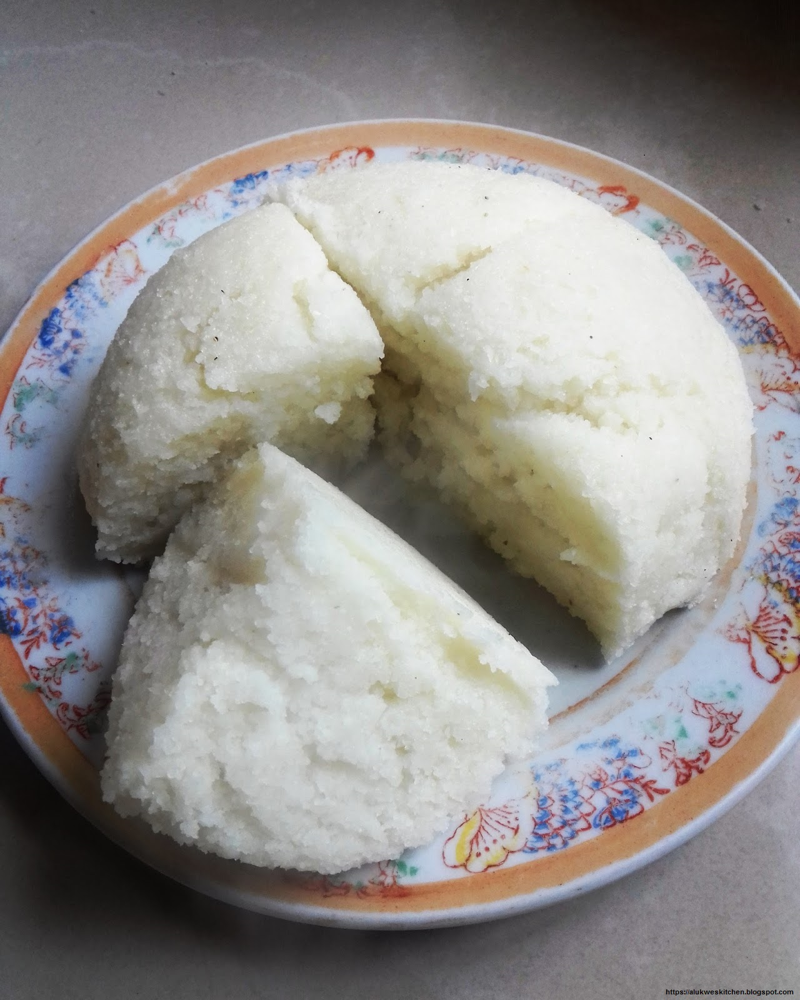

Ugali Recipe

What is Ugali?
Ugali is a common and most popular kenyan dish made from maize flour.
Ugali is best served hot with accompaniments such as fried green vegetables, roasted or fried meat.
Ingredients
Steps
- Boil water in a metallic pot
- Add the flour while stirring using a cooking stick
- Mix still it forms a thick paste
- Keep turning and mixing the thick paste so that it evenly cooks
- After 20-15 minutes the ugali will be ready
- Put a flat cover on the pot
- Remove the pot from the fire and carefully overturn it so that the Ugali will lie on the pot cover
- Place it on a flat surface while overturned, your Ugali is now ready to be served